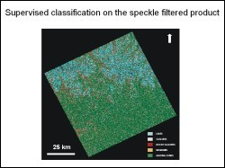
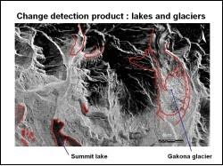

The Rainbow mountain area in south-central Alaska is a structurally complex and has undergone intense faulting. There are vast stretches of limestone that would be important to identify for planning field studies. There is also the Golkana Glacier in this region which is known to have receded with time. The objective of this study was to use existing Radarsat data for the area to map visible structural features on a regional scale and to study the expression of features such as glaciers and lakes on the Radarsat image.
 Radarsat data from 1998 (ID no. R113428158G1S008) from the Alaska Satellite Facility, UAF, was used for this study. After ingestion and preprocessing of the data, structural lineaments were identified on the image using visual interpretation techniques. A supervised classification was also carried out on a speckle filtered Radarsat image. Training samples were selected using pre-existing maps of the area. The image was classifies into lakes, glaciers, rocky glaciers, alluvial zones and moraines. The classified product showed a good match for alluvial zones, but some glaciers were wrongly classified as lakes.
 A change detection study was also carried out using a 1965 USGS topographic map and the 1998 Radarsat-1 image. Based simply on these two data sets, it appeared that the Golkana glacier had receded about 1.5 km in 33 years. However, the reliability of this figure is questionable as the Radarsat data was not corrected for the geometry.
Unavailability of complimentary data from optical sensors such as thematic mapper or Aster, was the biggest limitation of the study. The study could also benefit from using several more SAR scenes of different dates for analyses and interpretation.